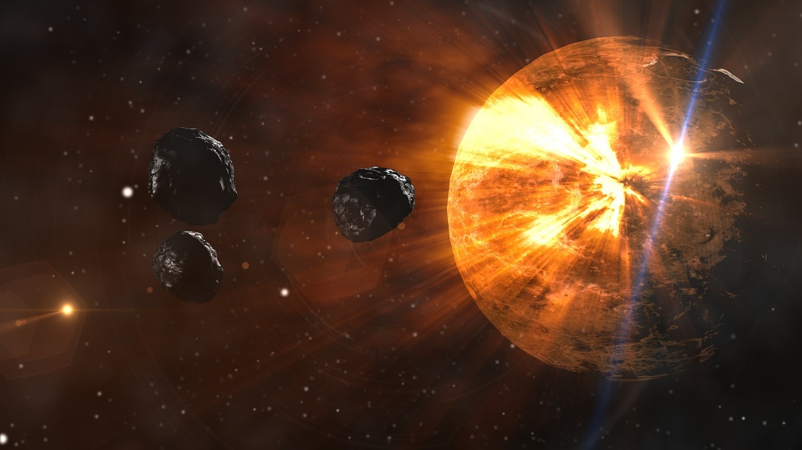
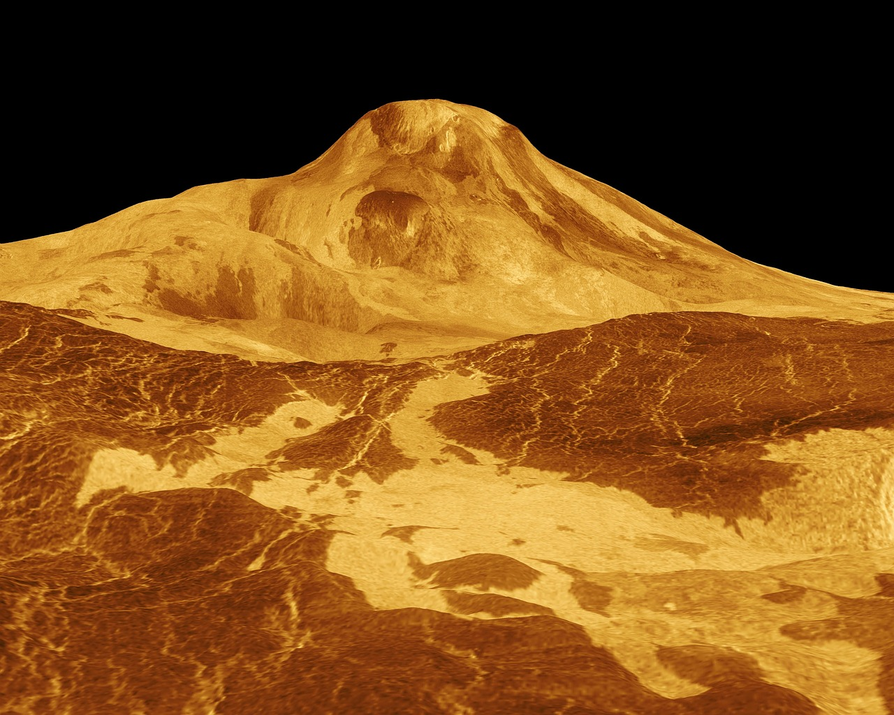
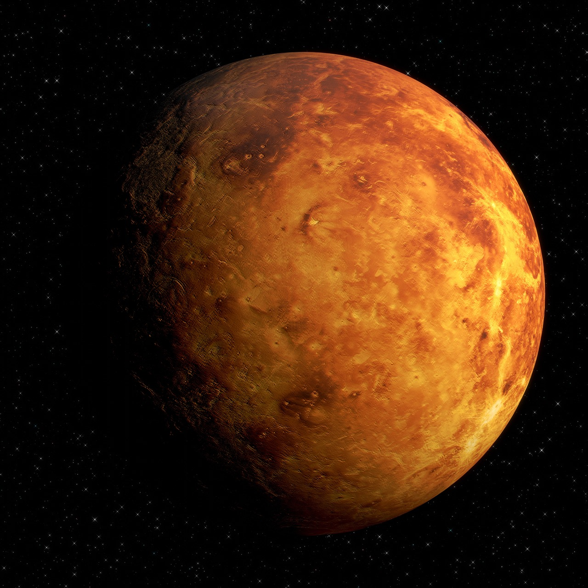
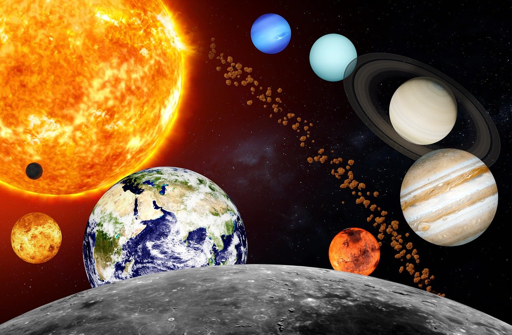

Fakta om Venus
- Nærmest Jordens tvilling: Venus er nesten like stor som Jorden, og kalles ofte Jordens "søsterplanet".
- Den varmeste planeten: Selv om Merkur er nærmest sola, er Venus faktisk den varmeste planeten i solsystemet, med temperaturer over 460°C!
- Tjukk atmosfære: Atmosfæren består mest av karbondioksid, og er så tett at den skaper en kraftig drivhuseffekt.
- Snur baklengs: Venus roterer motsatt vei av de fleste planetene sola står faktisk opp i vest og går ned i øst.
- En dag er lengre enn et år: Én rotasjon (en dag) på Venus tar ca. 243 jorddager, mens et år (en runde rundt sola) tar 225 jorddager.
- Ingen måner: I motsetning til mange andre planeter, har ikke Venus noen måner.
- Kraftige skyer: Venus er dekket av tykke skyer av svovelsyre, som gjør overflaten umulig å se med vanlige teleskop.
Bilde galleri
Her får du et innblikk i hvordan Venus ser ut gjennom bilder tatt av
romsonder og kunstneriske illustrasjoner. Skyene skjuler mye, men
takket være teknologi har vi fått et glimt av planetens vulkaner,
steinformasjoner og ekstreme landskap.




Historisk og vitenskapelig
Gjennom historien har Venus fascinert både astronomer og forskere. Mange romsonder har blitt sendt dit for å undersøke planetens ekstreme forhold. Sovjetunionens Venera-program var først til å lande, og senere har NASA og ESA også bidratt til kunnskapen vi har i dag.
Tekstforslag 2 Fremtidsrettet:
Venus er kanskje ikke beboelig, men forskere undersøker fortsatt hvordan liv kunne overleve under slike ekstreme forhold. Kanskje vil fremtidens teknologi gjøre det mulig å utforske planeten på nært hold?
Tekstforslag 3 Kort og enkel:
Hvordan ser Venus ut bak skyene? Utforsk planetens mysterier gjennom vitenskap, romsonder og nysgjerrighet.